有机化学10-1胺及杂环化合物10-1 20250528.pdf
合成-有机化学10-2胺及杂环化合物10-2 20260604.pdf
胺类 §
- 简单的胺：烃 ＋ “胺”
- 当N原子上连有烃基时：烃基名称前加“ N”
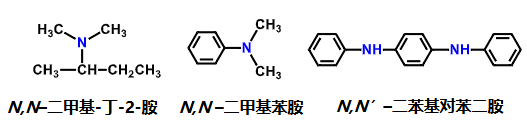
- 季铵盐：用铵代替胺
化学性质分析 §
- N也有手性 立体化学
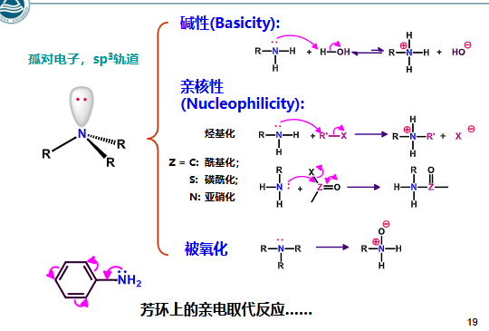
反应 §
- 碱性 酸碱反应
- R−NH2+HX→RNH3+X−
- 如果连着EDG，使得H越不易电离，使得N的孤电子对更加偏向和体系中质子结合，则碱性更强，除了tert-Bu这种位阻大的，不易与H结合 立体选择性 所以，连接EWG碱性没有连接EDG大 eg:R2NH>RNH2>R3N>NH3
- 芳香胺的碱性不如脂肪胺，原因同上
- 烃基化 取代 本质为SN 控pH反应
- R−NH2+MeIMeOHΔR−NMe3+I−
- Ar−NH2+R−XNaHCO3Ar−NHR
- Ar−NH2+MeOHH2SO4或Al2O3ΔAr−NMe2
- Ar−NH2+Ar−OHZnCl2Ar−NH−Ar
- 酰基化 取代 控pH反应
- R−NH2+R′−CO−L碱，比如胺，碳酸钠，吡啶R′CO−NH−R”
- 酰基化后可以降低氨基的致活效果，可以让邻对位只上一个，比如给苯胺用酸酐酰基化，上Br2只能上一个
- 异氰酸酯的生成：R−NH2+COCl2→R−N=C=O 异氰酸酯水解生成胺和CO2，醇解生成R-NH-COOR’，胺解生成R-NH-CONHR’
- 磺酰化：Hinsberg反应 取代 人名反应 控pH反应
- 伯胺：R−NH2+Ph−SO2ClNaOHR−NSO2PhNa”
- 仲胺：生成PhSO2NR2，无法溶解在NaOH内
- 叔胺：不反应
- 伯胺和亚硝酸反应，生成重氮盐 重氮盐 ，后续取代，芳香烃的称为Sandmeyer反应 人名反应 取代
- 脂肪烃的反应：R−NH2NaNO2HXR−N≡NX→R++X−+N2↑” 脱气体
- ArNH2的反应：Ph−NH2NaNO2HX,0∘CPh−N≡NX 或硫酸：Ph−NH2NaNO2H2SO4,0∘CPh−N≡NHSO4”
- 重氮化合物：有−N+≡N，偶氮化合物：有−N=N−
- Sandmeyer反应：
- 脱去所有N：Ar−N2ClH3PO2,H2OAr−H Ar−N2HSO4EtOHAr−H
- 被-OH取代，由苯胺制酚：Ph−N2HSO4H+,H2OΔPhOH 控pH反应
- 被卤原子取代，变成卤化苯：Ph−N2XCuX,HXPh−X 可以做一些直接用卤素取代因为定位效应做不了的反应，且此处适用于Cl和Br，不适用于F和I（见下）
- Gattermann反应 人名反应：和Sandmeyer反应类似 Ph−N2XCu粉,ΔPh−X 控温
- 上I：Ph−N2X (X=Cl或Br)KI,ΔPh−I 控温 或：Ph−N2HSO4KIPh−I
- 上F，又称作Schiemann反应 人名反应：Ph−N2XHBF4或NaBF4Ph−N2BF4ΔPh−F+N2↑+BF3↑ 脱气体
- 上-CN：Ph−N2HSO4CuCN,KCNΔPh−CN 可以进一步水解或者还原，引入-COOH或甲胺基
- 重氮化合物的还原 还原：Ph−N2XSnCl2,HClR−NH−NH2 Ph−NHNH2称作苯肼，用Na2SO3或SO2也可以：Ph−N2HSO4Na2SO3,H2OPh−NH−NH2
- 偶合反应：本质类似SE 取代 要求Ph有EWG使得Ph带部分正电 Ar−N2++Ph−EWG (EWG=OH,NH2,NHR,NR2)→Ar−N=N−p−Ph−EWG 两个芳香环通过偶氮基连起来
- 重氮盐和酚偶合，在微碱性环境
- 重氮盐和芳香胺偶合，在微酸性环境 控pH反应
- 位阻主要为p然后为o 立体选择性
- 仲胺和亚硝酸反应，生成N-亚硝基胺 取代：R1NHR2NaNO2HXR1−N(NO)−R2
- 氧化 氧化
- R1NHR2+H2O2→R1−N(OH)−R2
- Ar−NR1R2H2O2或RCO3HAr−N+O−R1R2”
- PhNH2MnO2,dil. H2SO4苯醌
- SE eg:磺化反应 取代 PhNH2con. H2SO4Δp−NH3+−Ph−SO3−
- 制备胺类
- 腈的还原 还原：R−CNH2/Ni或LiAlH4R−CH2NH2
- 酰胺用LiAlH4还原 还原
- 醛酮和胺反应先生成R=N-R’再催化加氢还原 还原
- Hofmann降解 人名反应：R−CONH2X2,OH−H2OR−NH2” 控pH反应 碱性水解，相当于从酰胺出发合成少一个碳的伯胺
- Gabriel合成 人名反应：R1COOCOR2NH3ΔR1CONHCOR2KOHR1CONKCOR2R−XΔR1CONRCOR2NaOH,H2OΔR−NH2 R-X不能用Ar-X代替；除了水解，还能用N2H4解，同样得到RNH2 控pH反应 控温
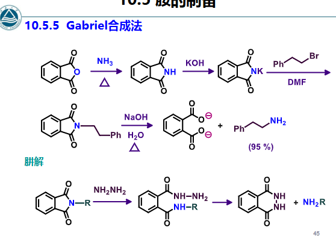
- 制取芳香胺：还原 还原 控pH反应 控温
- Ph−NO21. Fe,HCl2. OH−Ph−NH2
- N的还原 芳香化合物的缩写：N−NO2H2,Ni,EtOHΔN−NH2
- 酚胺：p−HO−Ph−NO2H2,Nip−HO−Ph−NH2
- 硝基化合物选择性还原： 还原
- 还原硝基不还原醛酮：用SnCl2：m−NO2−Ph−CHOSnCl2,con. HClm−NH2−Ph−CHO”
- 用NaSH只还原一个硝基：m−NO2−Ph−NO2NaSH,MeOHΔm−NH2−Ph−NO2
- 用Na2S选择性还原：o−HO−Ph−NO2Na2S,NH4ClΔo−HO−Ph−NH2” 受EDG和EWG影响，EDG活化o>p，EWG活化m
- 季铵盐
- 制备方法：R3N+RX→R4N+X− 加热到熔点分解，反应为上述反应的逆反应 控温 常用MeI，易于反应
- 季铵碱：R4N+X−+KOH→R4N+OH−+KX 或用湿的Ag2O：R4N+X−湿Ag2OR4N+OH−+AgX↓
- Hofmann消除 人名反应：季铵碱加热脱去β-H生成烯烃 控温 R−CH2N+Me3ΔR=CH2 规则：一般消去位阻小的β-H（酸性强的H），与Zaitsev规则相反 立体选择性，类似E1cb机理（单分子共轭碱消除）；如果β-C上有EWG，优先消除这个C的β-H，进一步验证了优先消去酸性强的β-H
- Hofmann和Zaitsev规则的区别：
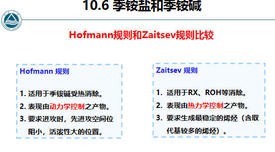
决定因素
- Hofmann消除的立体选择性 立体选择性：消除氢与季胺碱处于反式共平面位置
- 所以，常用路径为：胺+MeI再+湿氧化银再加热，最终消去
- 杂环化合物：常见杂原子：ONSP等，分类：非芳香环，芳香环
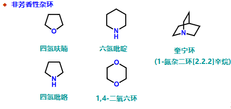
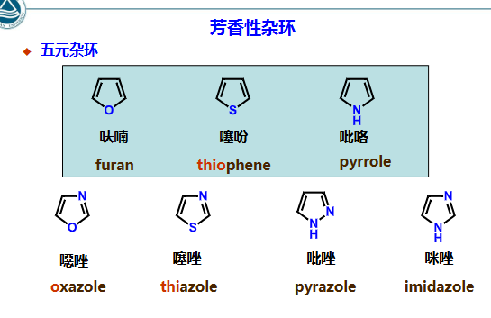
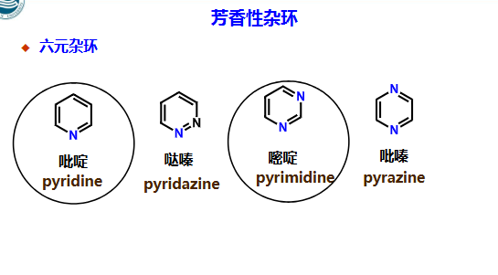
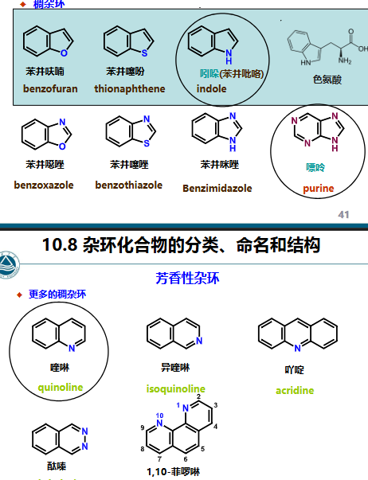
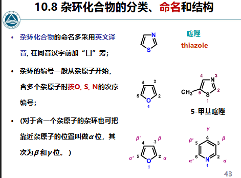
- 五元杂环，容易进行SE 取代，亲电活性比苯活泼，且吡咯（N）>呋喃（O）>噻吩（S）>苯，活泼性类似苯酚，苯胺
- 选择性：主要为2位（alpha-C） 立体选择性
- 例子：
- 硝化用硝酸乙酸酐：thiopheneMeCOONO2Ac2O,HAc,0∘C2-thiophene-NO2 控温 控pH反应
- 磺化：用三氧化硫的加合物：thiopheneSO3⋅Et2O(CH2Cl)22-thiophene-SO3H
- 卤化，仍然2位，直接用X2
- F-C酰基化 人名反应，催化剂用SnCl4或者BF3，仍然2位
- 制备furan,pyrrole,thiophene使用Paal-Knorr合成法：
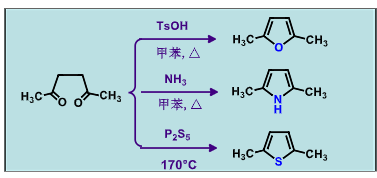
- furan
- 聚戊糖脱水：
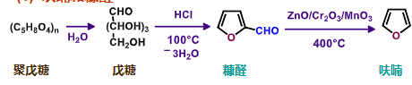
- 糠醛也可发生Cannizzaro反应 人名反应 氧化 还原：2-CHO-furanNaOH2-furan-CH2OH+2-furan-COOH
- 糠醛也可发生Perkin反应 人名反应 消除：2-furan-CHO+Ac2ONaOAcΔ2-furan-CH=CH-COOH (trans.)
- furan的还原 还原：furanH2,NiTHFHClCl−CH2CH2CH2CH2−Cl 第二步，用HCl进攻碳氧键开环并取代
- furan是共轭烯烃，所以也可以和单烯烃发生D-A反应 人名反应
- 同上，也可发生1,4加成 加成
- thiophene
- 卤素的SE，受温度影响 控温 低温一取代，2位，微热会二取代（另一侧2位），再高温三取代
- 还原 还原：
- thiopheneH2,NiCH3CH2CH2CH3
- thiopheneH2,Pd/C,MeOHTHT
- THT的氧化氧化 ：
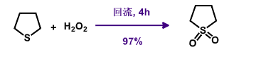
- pyrrole
- 还原 还原：同上，催化加氢生成四氢吡咯
- indole
- Fischer合成法 人名反应：芳基肼和醛酮加热重排
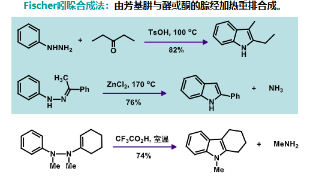
控温
- 相关反应：
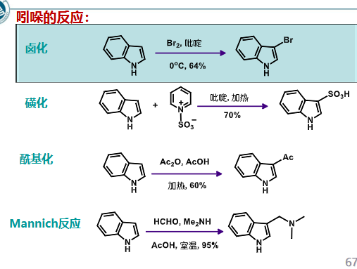
控温 人名反应
- pyridine
- 碱性：pyridine>PHNH2>pyrrole
- 也可进行SE 取代 E进攻β-C位，常见反应： 控温
- pyridineH2SO4,KNO3Fe,Δβ-pyridine-NO2
- pyridineH2SO4,HgSO4Δβ-H+-pyridine-SO3−
- pyridineBr2,HClFeβ-pyridine-Br
- 更易发生SN 取代，Nu进攻α−C和这个C对位的β−C，常见反应：
- pyridineNaNH2,PhCH3H2Oα-pyridine-NH2
- pyridinePhLi,Et2Oα-pyridine-Ph”
- 可成鎓盐，加热后重排 鎓离子 控温：pyridineMeIMe-pyridine+I−Δα-pyridine-Me+γ-pyridine-Me” 可看作o和p位
- α和β位的-Me有酸性，可以类似羟醛缩合，要Δ 控温 消除
- 催化加氢还原 还原
- 嘧啶：
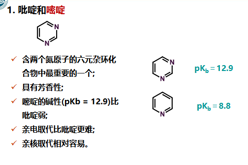
- 喹啉的SE 取代：
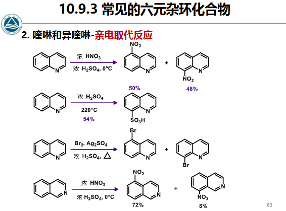
- Skraup合成法 人名反应：
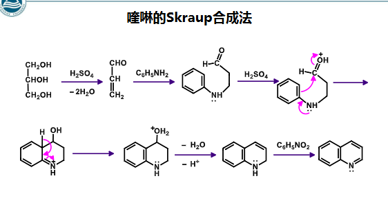